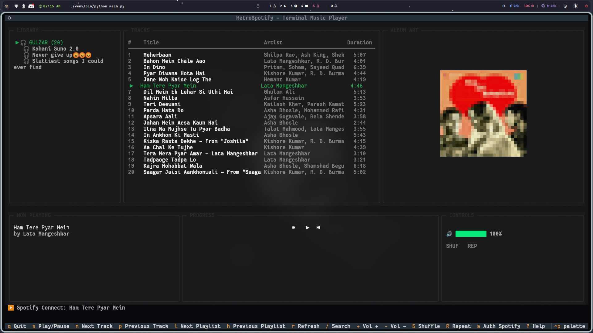

Where Nostalgic Terminal Visuals Meet Modern Streaming Luxury.
Experience Spotify like never before. Featuring a rich, fully responsive terminal user interface, dynamic ASCII album art, fine-grained volume controls, and intuitive keyboard navigation.

Designed for power users, audiophiles, and terminal enthusiasts.
Unlike standard wrappers, RetroSpotify pipes raw controls directly to ffplay for instant play, pause, and volume changes.
Immerse yourself in a carefully calibrated dark design using modern layouts, highlighted borders on focus, and rich ASCII color gradients.
Sit back and enjoy your playlists. Tracks automatically transition to the next queue item when they finish playing.
Press / to quickly search your playlists and tracks. Press Esc to return to your library view instantly.
Toggle random playback or repeat mode locally or directly on Spotify Connect devices using dedicated keys.
Control playback on active smart speakers, web browsers, or desktops via the integrated Spotify Web API.
Navigate the player effortlessly without touching your mouse. Click any key to view its action.
Click any key above or press it on your physical keyboard to see its description and action within RetroSpotify.
Set up RetroSpotify in minutes with a virtual Python environment.
Alternative: Don't want to manage Python virtual environments? Download pre-built standalone binaries or learn to build them yourself in the Compilation & Releases Guide.
Clone the project files to your local workstation.
git clone https://github.com/vaibhav-rm/Spotify-textual.git
cd Spotify-textualEnsure `ffplay` is installed so the player can pipe audio feeds.
# Debian/Ubuntu
sudo apt install ffmpeg
# macOS
brew install ffmpegInitialize your virtual environment and install the required modules.
python3 -m venv venv
source venv/bin/activate
pip install -r requirements.txtLearn how to authenticate RetroSpotify instantly using PKCE or custom credentials.
RetroSpotify includes a secure **pre-configured default Spotify Client ID**, so you do not need to register a developer app or manage API keys.
python main.py or your compiled standalone executable.If you prefer to run RetroSpotify through your own personal Spotify Developer application:
http://127.0.0.1:8888/callback as the Redirect URI settings..env file:SPOTIPY_CLIENT_ID=your_custom_client_id_here
SPOTIPY_CLIENT_SECRET=your_custom_client_secret_here
SPOTIPY_REDIRECT_URI=http://127.0.0.1:8888/callback
RetroSpotify features an integrated background Spotify Connect daemon (spotifyd):
Track the latest updates, bug fixes, and feature releases of RetroSpotify.
🔊 (playing) and ⏸ (paused) symbols to the track list rows.user-read-private and user-read-email for accurate subscription tier and settings synchronization.